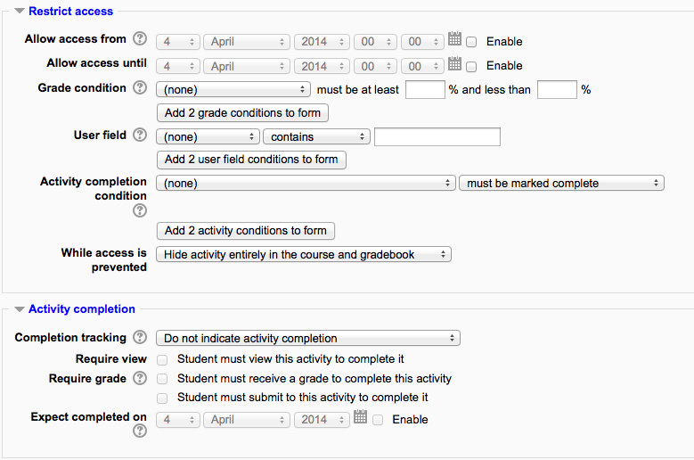

Conditional activities¶
Conditional activities enable teachers to restrict the availability of any activity or even a course section (in Moodle 2.3 onwards) according to certain conditions such as dates, grade obtained, or activity completion . When it is enabled by the administrator, a “Restrict access” setting appears in the settings of activities or resources and also when editing a course section.
Conditional activities settings¶
Enabling the use of conditional activities¶
To use conditional activities, the feature must be enabled by an administrator by checking the enable availability box in Administration > Site administration > Advanced features. A restrict access section will then appear for teachers on the edit activity page.
Restricting access¶
The restrict access section asks for the conditions when the activity (or resource) should be visible. This can be based upon dates, and/or score ranges of other activities and/or if other activities are considered completed (see Activity completion).
Note that ALL access restrictions (date, grade condition, activity completion condition) have to be met in order for the activity to be made available and that access may be restricted to an actual time and not just a date.
Generally access is prevented before the conditions are met, however if ‘Allow access until’ is enabled, then access is prevented after the specified date.
Restricting access to course sections

It is possible to restrict access to activities within a whole course section by specifying the conditions in the settings for that particular section.
Restricting access by user profile fields
It is possible to restrict access to activities based on a custom user profile field. You can select a field type, condition and name. For more information please see Conditional user fields.

Grade condition
You can specify a condition on any grade in the course: the full course grade, the grade for any activity, or a custom grade that you create manually. You can enter either a minimum value (at least percentage), a maximum value (less than percentage), both, or neither. The activity will only appear if the student has a value for the specified grade, and if it falls within any specified number range. You can add more than one grade condition. All conditions must be met in order for the activity to appear.
- The range numbers can be fractional (with up to five decimal places) if necessary.
- Be careful with the maximum value; if the maximum is 7, a student who scores exactly 7 will not see the activity. You could set it to 7.01 if you really wanted to include 7.
- If creating several different activities that appear according to grade ranges, use the same number for the maximum of one activity, and the minimum of the next. For example, you might create one activity with a maximum of 7 and another with a minimum of 7. The first would appear to everyone scoring between 0 and 6.99999, and the second would appear to everyone scoring 7.00000 to 10. This guarantees that everyone with a grade will see one or other.
Removing a grade condition
To remove a grade condition, set the assessment name to ‘none’ and remove the range number values.